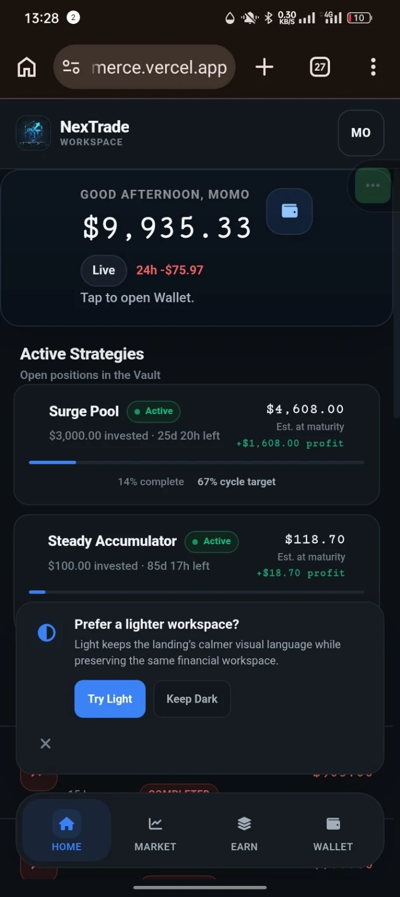
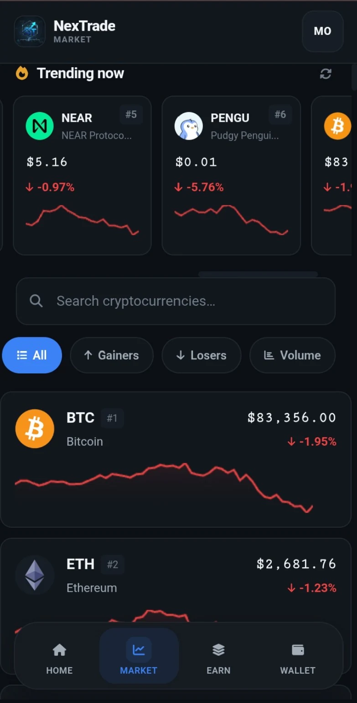

NEXTRADE
When the interface cannot be allowed to define the money.
A mobile investment-platform case study built around a transaction ledger, server-authoritative execution, retry-safe mutations and market states that do not collapse every failure into “try again.”
The interface can explain financial state. It does not automatically get to define it.